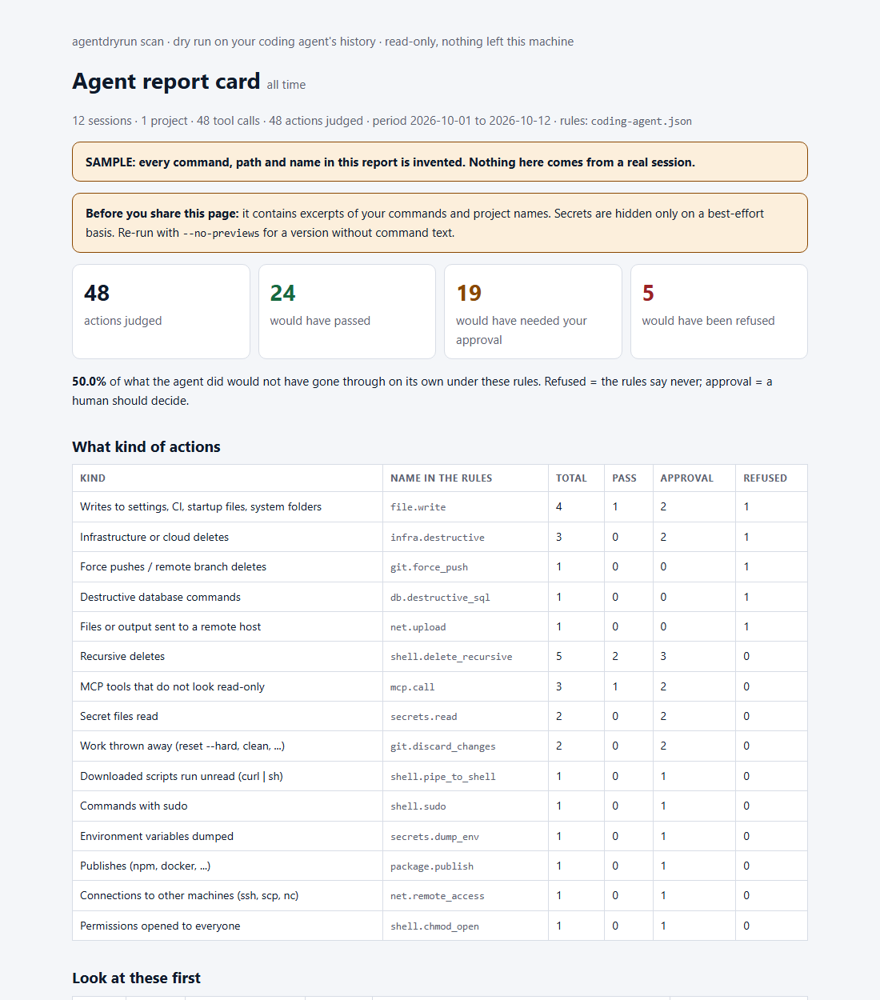

What did your coding agent do last month?
Anthropic says users accept 93% of Claude Code's manual permission prompts. I wanted to know what was in the ones I clicked through, so I wrote a read-only scanner for my own history.
The idea
Claude Code already keeps a transcript of every session on your machine, in ~/.claude/projects. Each tool call the agent made is in there, with the command or the path, the folder it ran in, a timestamp, and whether it failed. Nothing needs to be installed in the agent and nothing needs to be sent anywhere: the information is already on disk.
python -m agentdryrun scan reads those files, names what the agent attempted, and judges each action against a rules file as a dry run: would it pass, would it need a human, or would it be refused. Nothing is blocked, changed or executed. Python 3.9+, no dependencies.

What it names
- recursive deletes, by how far from the project they reach (inside it, outside it, your home directory, a path it cannot resolve);
- force pushes and remote branch deletes, with extra weight on
main; - a download piped into a shell (
curl ... | sh); - secret files read (
.env, ssh keys, cloud credentials) and files or command output sent to another host; - destructive database and cloud commands, with a hint when the command mentions production;
- writes to the agent's own settings, CI workflows, git hooks and shell startup files;
- MCP tools whose names suggest they change, send or delete something.
The starter rules are a JSON file in the repository. You are meant to copy it and change it to how you work: a dry run is only as good as the rules it is judged by.
What went wrong in the first version
I ran the first version on one real 90-day history, about 11,000 tool calls. It said roughly a fifth of everything needed approval and a couple dozen actions would be refused. Almost all of it was noise from my own parser:
curl ... | python -c "..."was flagged as "download piped into a shell". It only reads the download.- Text inside a here-document (a note, a script being written to a file) was read as if it were commands.
rm -rf "$DIR/build"was "a path built from a variable we cannot check", even when the variable was set on the line above.- Every
cd other-folder && rm -rf buildwas judged against the wrong folder. - Any write outside the working directory counted, although people legitimately work in several directories.
After fixing those, about 3% needed approval and two actions were refused. Both were real force pushes to main. The lesson is not subtle: invented test fixtures would have shown none of this. The repository's tests now pin every one of these cases, and the build log records the mistakes.
What it cannot do
- It matches patterns in commands. It misses a script that deletes files,
python -c, and paths built at run time, and it flags a few harmless things. - It sees what the agent attempted. It cannot know whether a command worked, or whether you approved it.
- Claude Code only, for now. The transcript format is not a documented interface and was read as it looked on 25 October 2026; a new version can break the reader.
- It is not a sandbox and stops nothing. Auto mode, permission rules and sandboxes are the tools for that. This tells you what they would have had to catch.
Try it
git clone https://github.com/ntinosgkiou-code/agentdryrun
cd agentdryrun
python -m agentdryrun scan --no-previews--no-previews leaves command text out of the page, so you can share it. Or, inside Claude Code: claude plugin marketplace add ntinosgkiou-code/agentdryrun, then claude plugin install agentdryrun@agentdryrun and /agentdryrun:scan.
The most useful thing you can send back is where it is wrong: a false alarm, something it missed, or a crash. Paste the command text only, no secrets, in an issue. If you use Codex or another agent and can share a redacted session file, issue 11 explains what would let it read yours too.